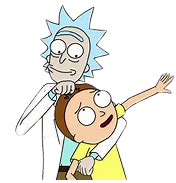

Sinopsis
La serie sigue las desventuras del cínico científico loco Rick Sánchez y su nieto de buen corazón pero inquieto Morty Smith, que dividen su tiempo entre la vida doméstica y las aventuras interdimensionales que tienen lugar a través de un número infinito de realidades, a menudo viajando a otros planetas y dimensiones a través de portales y en el platillo volador de Rick. El concepto general de Rick y Morty se basa en dos escenarios conflictivos: el drama familiar doméstico y un abuelo alcohólico arrastrando a su nieto a travesuras.
Creado por Justin Roiland y Dan Harmon.
Lanzamiento: 2013.
País de origen: USA.
Personajes
Ver Serie
Las 6 temporadas de Rick y Morty están disponibles en HBO Max. Tiene un total de 61 episodios.